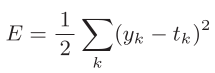
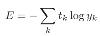
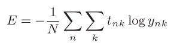
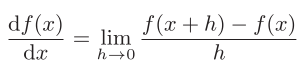
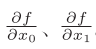
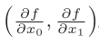

3. 神经网络的学习¶
3.2. 损失函数¶
损失函数是用来评价神经网络学习性能的指标。
- 均方误差
- 
def mean_squares_error(y, t): return 0.5 * np.sum((y - t)**2)
- 交叉熵误差
- 
def cross_entropy_error(y, t): delta = 1e-7 return -np.sum(t * np.log(y + delta))
mini-batch交叉熵误差
def cross_entropy_error(y, t): if y.ndim == 1: t = t.shape(1, t.size) y = t.shape(1, y.size) batch_size = y.shape[0] return -np.sum(t * np.log(y + 1e-7)) / batch_size
3.3. 数值微分和梯度¶
导数
def numerical_diff(f, x): h = 1e-4 # 0.0001 return (f(x+h) - f(x-h)) / (2*h) # 中心差分
偏导数
梯度
由全部变量的偏导数汇总而成的向量称为梯度。梯度表示的是各点处的函数值减小最多的方向。函数的极小值，最小值及鞍点的地方，梯度为0。虽然梯度方向不一定指向最小值，但沿着它的方向能最大限度地减小函数的值。def numerical_gradient(f, x): h = 1e-4 # 0.0001 grad = np.zeros_like(x) # 生成和x形状相同的数组 for idx in range(x.size): tmp_val = x[idx] # f(x+h)的计算 x[idx] = tmp_val + h fxh1 = f(x) # f(x-h)的计算 x[idx] = tmp_val -h fxh2 = f(x) grad[idx] = (fxh1 - fxh2) / (2*h) x[idx] = tmp_val # 还原值 return grad
梯度法
η称为学习率def gradient_descent(t, init_x, lr=0.01, step_num=100): x = init_x for i in range(step_num): grad = numerical_gradient(f, x) x -= lr * grad return x
{kind=link}
3.4. 学习算法步骤¶
- mini-batch 从训练数据中随机选取一部分数据，目标是减小mini-batch的值。
- 计算梯度 为减小nimi-batch损失函数的值，需要求出各个权重参数的梯度。梯度表示损失函数的值减小最多的方向。
- 更新参数 将权重参数沿梯度方向进行微小更新。
- 重复 重复步骤1，2，3。